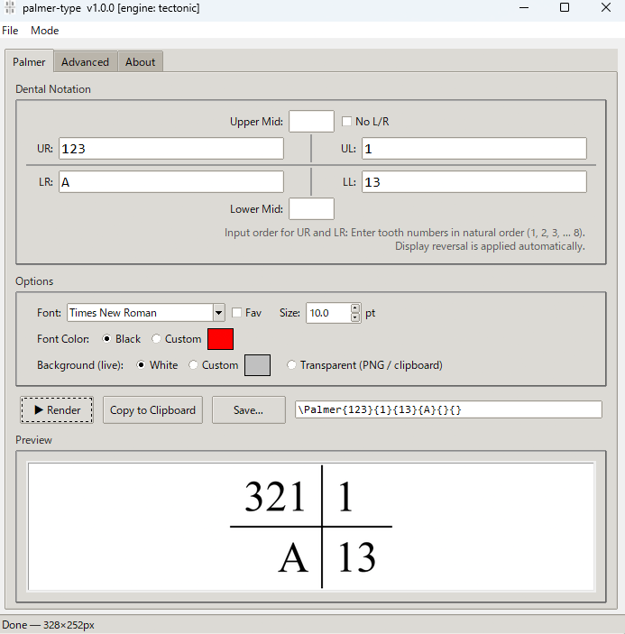

palmer-type
Render Zsigmondy-Palmer dental notation as images.
About
palmer-type compiles Zsigmondy-Palmer dental notation into publication-ready PNG, JPEG, or PDF images. Enter tooth numbers, click Render, and copy or save the result. No TeX expertise required.
Built on palmer.sty, a LaTeX package for Palmer notation, and bundled with Tectonic as its TeX engine — no TeX distribution needed.
Features
GUI Rendering
Enter notation in a visual cross layout and render crisp images in seconds.
CLI & Batch
Automate rendering from the command line with single or batch JSON input.
Word Converter
Replace \Palmer commands in .docx files with rendered images automatically.
Screenshot

Download
Several executables are available on the GitHub Releases page. The installer (palmer-type-…-win-x64-setup.exe) is recommended for most users.
Note on first run
The initial launch requires an internet connection. Tectonic automatically downloads the TeX support files it needs (~100 MB) and caches them locally. Subsequent launches work offline.
Support This Project
palmer-type is free and open-source. Donations help fund ongoing research and development of this tool and the underlying palmer.sty package. If you find this project useful in your research, clinical work, or publishing, your support is greatly appreciated.